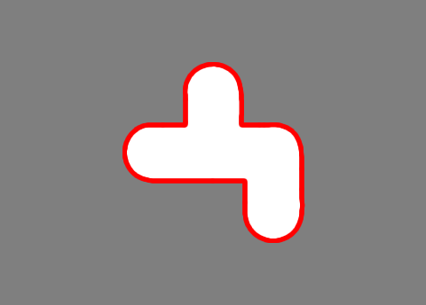
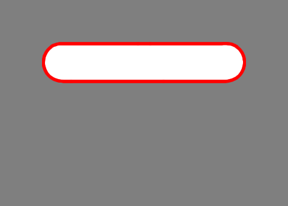
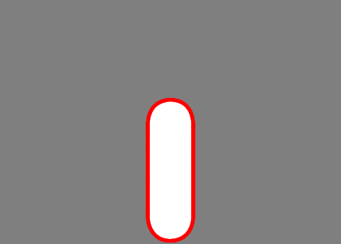
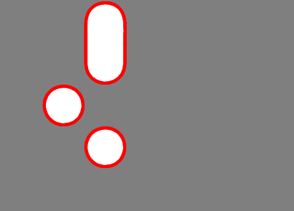
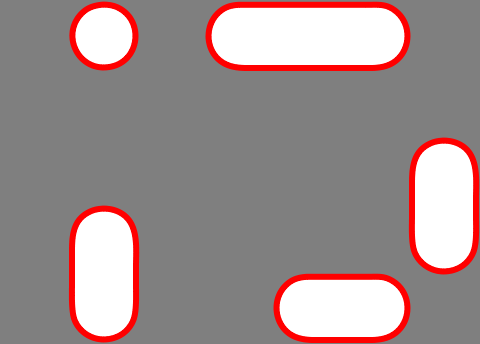
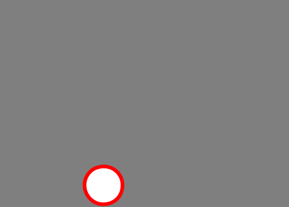

Try typing all of the vowels into this box:| Enter: aeiou |

A therm is a unit of heat, and these are very "hot" letters. For example, "the" is the most common 3-letter sequence in English, and "her" is the fourth most common. Try typing the following words, which use only these letters. To type a word, touch the first letter. Without lifting your finger, move it to the second letter, then to the third letter, and so on. Once you reach the last letter in the word, lift your finger. Flow will add spaces between words automatically.| Enter: the he her them me hem |
| Enter: that more heart reheat hour mite route item |

Try typing the following words:| Enter: thing ring ingot hearing training arranging grain range |

Try typing some words that use these letters:| Enter: what chess she short who where much wishing which |
| Enter: would could sold holding cold |
| Enter: sun old real nice air ice house shore mound |
| Enter: welcome candle treasure singer creation tradition accident |

As much as possible, their positions still reflect how they are used. For example, q is close to u, which almost always follows it. K is next to c, since it often appears as part of the sequence "ck". Y is above the letters o and u, so the common letter sequence "you" forms a straight line down a column. Try typing these words:| Enter: by very plank exact quick fun just zoo young cake |
| Enter: please fumble quavery express juxtapose bookshop |

To enter a contraction, just trace through the apostrophe key like any other letter. Try typing these words:| Enter: he's I'm I'll it's can't won't wouldn't we've that's they're |